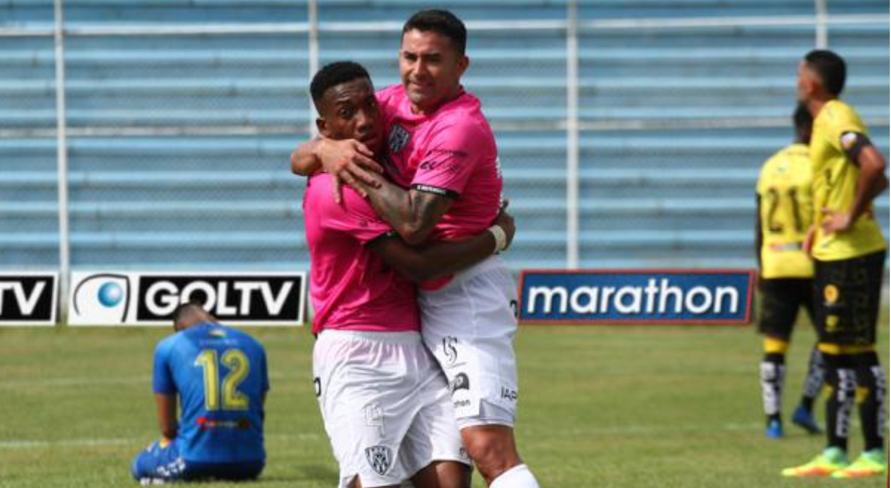

Ind. del Valle se adueñó del liderato de la LigaPro al vencer a 1-0 a Fuerza Amarilla
Independiente del Valle venció este domingo 7 de abril del 2019, 1-0 a Fuerza Amarilla, en Machala, pero el marcador pudo ser más abultado. El equipo sangolquileño falló algunas opciones claras frente al pórtico y debió conformarse con el tanto de Anthony Landázuri, en el minuto 50
Los dirigidos por el DT español Ismael RescalvoLos dirigidos por el DT español Ismael Rescalvo fueron superiores a los orenses de principio a fin, con mayor volumen de juego, dinámica, velocidad, precisión y orden. Era casi un partido perfecto, pero erró demasiado ante el golero local Tobías Vargas.
Aquí se produjo el estreno como titular del argentino-ecuatoriano Claudio Bieler, uno de los más destacados y cuyo aporte se vio en la cancha. Él ya tuvo minutos en la victoria sobre Emelec, donde ingresó al cambio. Mientras estuvo en el gramado del estadio 9 de Mayo, fue el más peligroso del club negriazul. Le faltó puntería y fortuna para redondear una buena tarde.
Alineacion Fuerza AmarillaTobias Vargas en el arco; Nixon Folleco, Francisco Silva, Nicolás Gómez y Manuel Lucas en la defensa; John Campoverde, Álex Bolaños, Gustavo Cristaldo y Davinsin Jama en el medio campo; Héctor Penayo y José Luis Flecha en la delantera